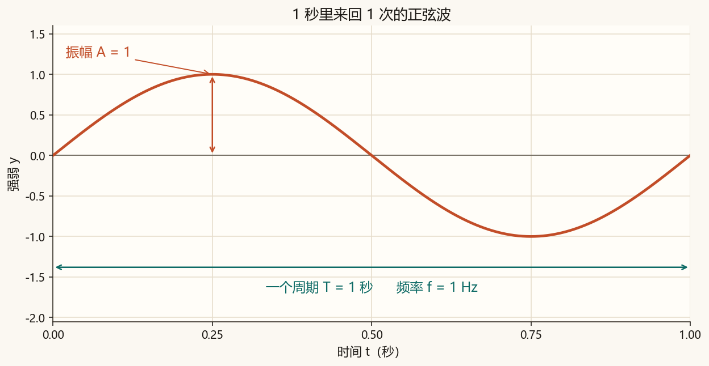
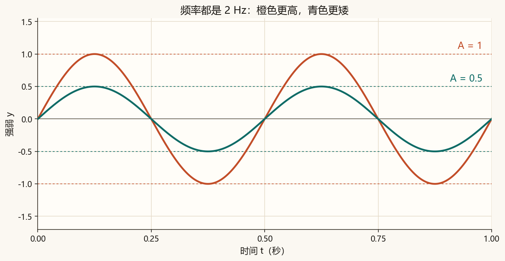
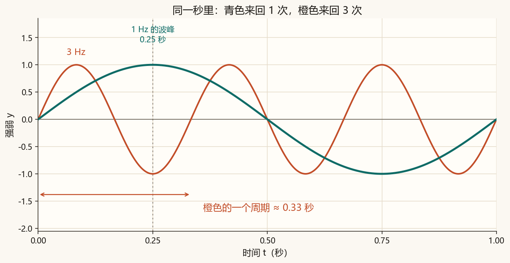
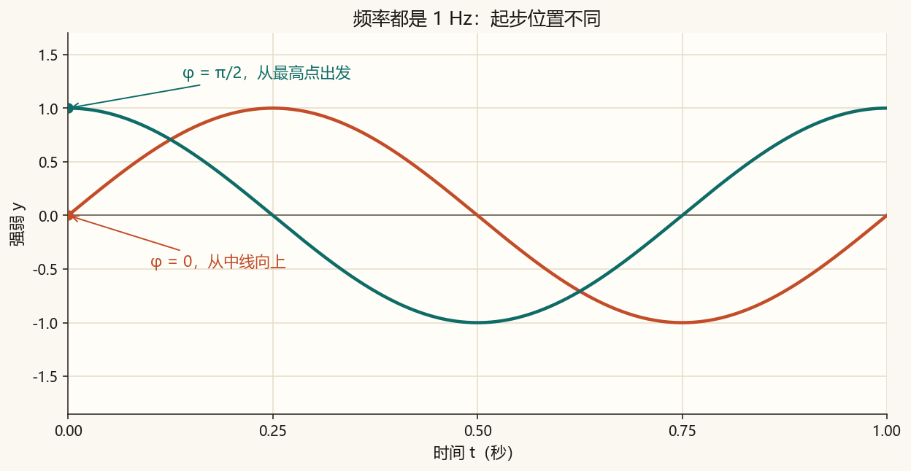

第 0 篇 · 准备 · 约 40 分钟
这一篇把一条正弦波画出来，并给三个可以拧的量起名字：振幅、频率、相位。电脑里的声音和图像，后面都会回到这种上下来回。
横轴是时间，单位秒。纵轴先就叫强弱：它是一个随时间起伏的数。做声音时，这个数对应空气压强的变化；做图像时，类似的数会变成亮度。这一篇只看图。
下面这条曲线用 1 秒完成一次完整的起伏：从中线升到最高，再降到最低，然后回到中线。最高点叫波峰，最低点叫波谷。这一次完整起伏叫一个来回，也叫一个周期。
这条曲线有一个很具体的来历。想象一个点沿着圆逆时针转。我们只记录它的高度，再把高度按时间画到右边，就得到正弦波。
点从圆的最右侧出发，高度是 0，接下来向上走。转完整整一圈，右边的波也完成一次来回。这一圈用 1 秒，所以频率是 1 Hz：赫兹，每秒一次。
滑块可以用鼠标拖，也可以先点中它，再用键盘左右方向键。播放时，一圈大约用 4 秒放完，方便看清；图上写的时间仍然是 0 到 1 秒。
一条正弦由三个数决定。下面先看脚本已经画好的图，第 安装并运行 一节会把同一批图再生成一次。
振幅 A 是波峰离开中线的距离。A = 1 时，波峰的强弱是 1，波谷是 −1。振幅改变高度，不改变 1 秒里的来回次数。


频率 f 是 1 秒钟完成的来回次数，单位 Hz。周期 T 是完成一次来回要用的秒数，T = 1 / f。频率改成 3，1 秒里就有 3 次来回，每次大约 0.33 秒。

先记一个后面要用的频率：440 Hz。它的周期是 1/440 秒，大约 0.00227 秒，也就是 2.27 毫秒。第 1 篇会用它做一段能播放的声音。440 Hz 是乐队对音时常用的标准音 A。
相位 φ 是起步时多出来的角度，单位弧度。φ = 0 时，t = 0 的强弱是 0，随后向上。φ = π/2 时，t = 0 已经在波峰。两条波可以一样快，只是起步位置不同。
弧度是量角度的一把尺子。暂时记住三个刻度就够：一整圈 = 2π，半圈 = π，四分之一圈 = π/2。π 大约是 3.1416，所以 π/2 大约是 1.5708。

把三个量放进同一行，就是这一篇的全部计算：
y = A · sin(2π f t + φ)
读出来是：y 等于 A 乘以 sin，括号里是 2π 乘 f 乘 t，再加 φ。
| 符号 | 名称 | 在图里的意思 |
|---|---|---|
| y | 强弱 | 这一时刻的高度 |
| A | 振幅 | 波峰离开中线的距离 |
| f | 频率 | 每秒来回几次，单位 Hz |
| t | 时间 | 从 0 开始过了多少秒 |
| φ | 相位 | 起步时多转过的角度，单位弧度 |
| sin | 正弦 | 把角度变成 −1 到 1 之间的高度 |
sin 要的是角度。一整圈记作 2π。f 是每秒的圈数，t 是过了多少秒，f × t 就是一共转了多少圈。再乘 2π，就换成正弦要的角度。φ 是还没开始计时就已经多转的那一截。
算例 1。 A = 1，f = 1，φ = 0，t = 0.25 秒。括号里的角度 = 2π × 1 × 0.25 = π/2。sin(π/2) = 1，所以 y = 1。这是图 0-2 的波峰，也是圆上的最高点。
算例 2。 只把 f 改成 3，t 仍是 0.25 秒。角度 = 2π × 3 × 0.25 = 3π/2。sin(3π/2) = −1，所以 y = −1。图 0-4 里，0.25 秒的虚线压在橙色波谷上。
算例 3。 A = 0.5，f = 2，φ = 0，t = 0.125 秒。角度 = 2π × 2 × 0.125 = π/2。sin 得到 1，再乘振幅，y = 0.5。这是图 0-3 里青色波的第一个波峰。
下面这张图不需要安装 Python。纵轴固定在 −1.7 到 1.7，所以你能看见高度真的变了。浅色竖线从 t = 0 起，每隔一个周期画一条。
建议按这个顺序拖：先只动频率，数一数 1 秒里有几个来回；再只动振幅，确认来回次数不变；最后把相位拨到 90°，看起点是不是到了波峰。90° 就是 π/2。
网页上的图关掉之后就没了。脚本把同一条公式算完，存成图片。真正计算正弦的只有一行，其余代码负责把课文对照图和你的图分别保存。
import numpy as np
A = 1.0 # 振幅
f = 1.0 # 频率，单位 Hz
phi = 0.0 # 相位，单位弧度
t = np.linspace(0, 1, 2000) # 0 到 1 秒取 2000 个点，只为把线画顺
y = A * np.sin(2 * np.pi * f * t + phi)这 2000 个点是为了让线条看起来光滑。它还不是声音文件的采样率。采样率决定文件里真正保存多少个数，第 1 篇再写进 wav。
如果电脑上还没有 Python，到 python.org 安装，安装时勾选 “Add python.exe to PATH”。然后打开终端，进入本文件夹（里面能看到 index.html），运行：
python -m pip install -r code/requirements.txt
python code/ch00_sine.py若提示找不到 python，把命令里的 python 改成 py -3。运行成功后，终端里会出现「自检通过」，并在 assets/figures/ 写下这些图：
ch00_basic.png、ch00_freq.png、ch00_amplitude.png、ch00_phase.png：课文对照图，参数是固定的。ch00_my_sine.png：只跟随脚本顶部「改这里」的四个数。No module named numpy：再运行一次上面的 pip install。chcp 65001，再运行脚本。图片照样会保存。用编辑器打开 code/ch00_sine.py。顶部「改这里」只影响 ch00_my_sine.png。课文那四张图每次仍按固定参数重画，方便和正文对。
FREQUENCY = 1.0 改成 3.0，保存，再运行脚本。打开 assets/figures/ch00_my_sine.png。1 秒里应有 3 个来回，起点仍在中线。这和算例 2、图 0-4 的橙色曲线是同一件事。1.0，把 PHASE = 0.0 改成 np.pi / 2，再运行。图应从最高点出发，对应图 0-5 的青色曲线。DURATION = 1.0 改成 2.0。横轴变成 2 秒。频率仍是 1 Hz 时，图上会有 2 个来回。三个量各管一件事。频率管 1 秒里的来回次数。振幅管波峰离中线的距离。相位管 t = 0 时波已经走到的位置。
先自己答，再展开。
4 个来回。周期 T = 1/4 = 0.25 秒。
来回次数仍是 2，由频率决定。波峰 y = 0.3，波谷 y = −0.3。
t = 0 时，角度是 π/2，y = 1。t = 0.5 秒时，角度是 2π × 0.5 + π/2 = 3π/2，y = −1。半秒时，圆上的点在最低处。
这一篇的曲线看起来连绵不断。下一篇会看到：文件里保存的是一串按时间排好的数。我们用这串数写一段 440 Hz 的声音，再写一张由亮度数字组成的图。